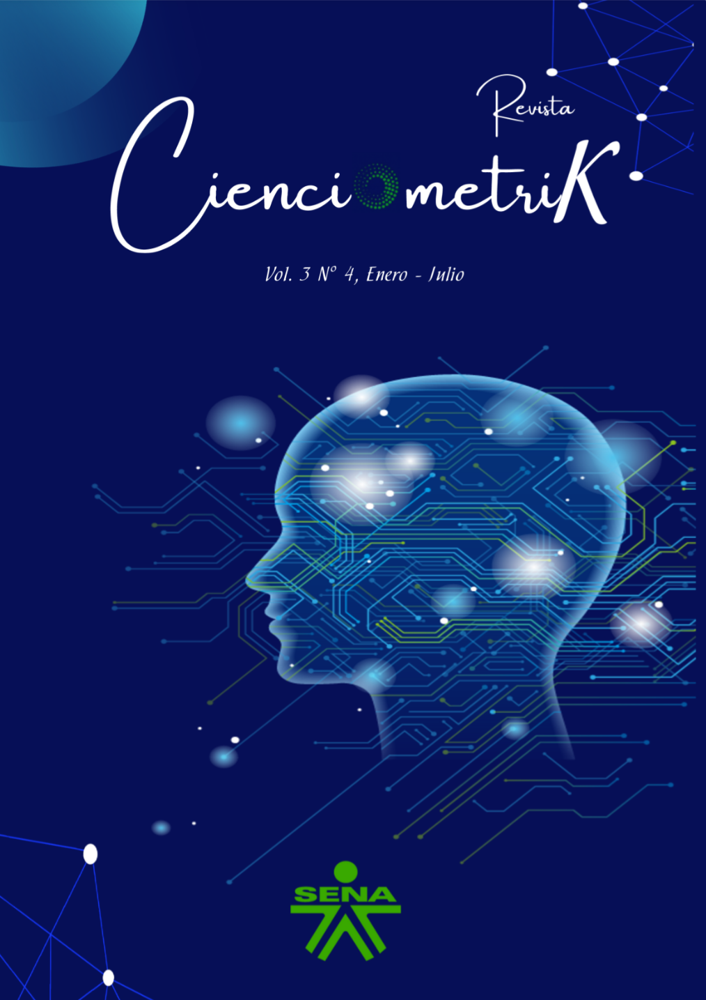
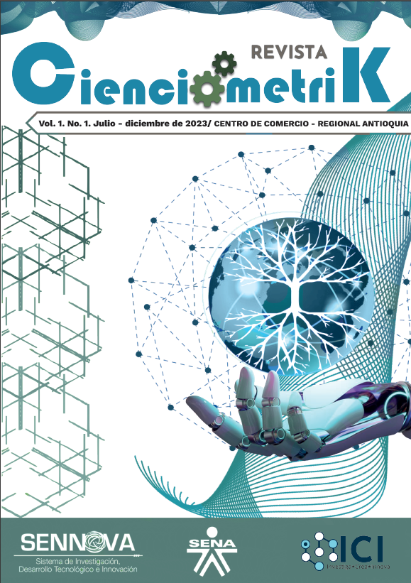

Edición Más Reciente

Revista Cienciométrik
Dossier especial: II Feria Tecnológica SENA. Este volumen integra los proyectos más destacados en investigación aplicada, innovación tecnológica y desarrollo industrial presentados por la comunidad académica y el ecosistema SENNOVA.
Archivo de Publicaciones

Cienciométrik
Artículos de investigación y resultados del semillero ICI con enfoque en desarrollo sostenible.

Cienciométrik
Investigación en tecnología, desarrollo sostenible y contabilidad corporativa.

Cienciométrik
Tercer volumen de la revista con resultados consolidados del semillero ICI.

Cienciométrik
Artículos sobre IA, mipymes, economía circular e inclusión tecnológica.

Cienciométrik
Incluye artículos de investigación y ponencias del 1er Simposio Nacional de Cienciometría.
Libros Editados

Cartillas Digitales

Comunicación para la inclusión
Herramientas web de comunicación para la inclusión laboral de aprendices sordos.

Servitización y estrategias
Personalizando productos y servicios para la competitividad (SERVISER).